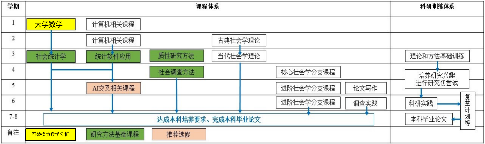
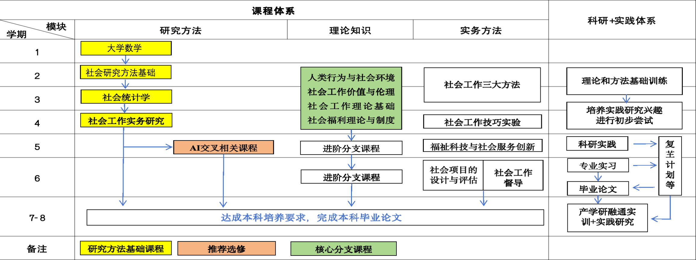

目前核实1对官方建议先修，另有1条官方培养顺序。建议与培养顺序均不等于强制选课条件；虚线知识准备是推断，点线是无方向的内容联系。
点击节点继续查看；前后关系与内容联系均列在下方。无连线表示资料不足，不代表没有先修。长图可在框内滚动。
主线图是选取的学习路线，不是全部先修条件。官方原图保留原始版面，不能仅按上下位置连边。


完整JSON · 节点CSV · 关系CSV · 待补关系 · 方法说明